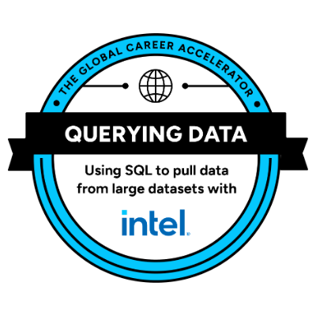

international business & analytics
Turning Data and Real‑World Experience into Insight
I'm an International Business student at CU Denver graduating in December, and I want to start my career in tech sales. This summer I interned at Intapp doing cold outreach to commercial real estate firms, and it confirmed something I'd already noticed in other jobs: I like talking to people and building relationships.

sales internship
My first look at sales
At Intapp I did cold outreach to commercial real estate firms: researching accounts, making calls, and passing meetings to account executives. It showed me how pipeline actually gets built, and it's a big reason I want to keep learning sales.
Outbound funnel
source: HubSpotBars show funnel stage, not scale.
Sales Development Intern
Intapp · Summer 2026
- Placed 4,200+ cold calls, generating 256 connects at a 7.8% connect-to-meeting rate
- Booked 20 meetings and ran 8 intros for account executives, with one advancing into a full product demo
- Prospected companies and individual contacts using HubSpot and ZoomInfo
- Logged outreach and kept CRM records clean in HubSpot
selected work
The analytical side
Projects where I dug into the data, found what mattered, and turned it into a recommendation someone could act on.
Intel: Sustainability Impact Analysis
Wrote SQL queries across Intel's global repurposing program. Found that older devices save 2.5x more energy per unit, and that routing laptops to Asia produces the highest CO₂ return.
Grammy Awards: Website Performance
Used Python to analyze traffic before and after a 2022 domain split. Found the split created two distinct audience profiles with different engagement patterns.
ESPN: "Know The Feeling"
Social-first campaign to grow ESPN's prime-time NFL audience with younger viewers, built on creator partnerships and short-form content.
about
A little more about me
I've had that kind of work in a lot of places, like managing lifeguard teams, working with brokers and property managers at the Downtown Denver Partnership, and volunteering in the Dominican Republic and British Virgin Islands. What ties it together is that I like figuring out how messy situations work and making them work better. I pay attention to details, and I like digging into data to find something I can actually share with the person I'm working with. My Business Analytics minor and my SQL and Python work have made me comfortable doing that.
The analysis work at the Partnership and in my Coding for Data program showed me I'm good at both sides of this, talking to people and making sense of the numbers behind what they need. Outside of class I'm active in FAM and Sales Club at CU Denver.
certifications
Credentials
Project-based programs through Global Career Accelerator.

Let's connect.
I'm looking to start my career in sales and would love to hear about your team.